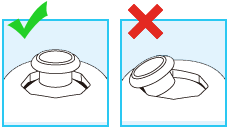

3 |
Controllerinstellingen |
 |


Opmerking: als de zekering van het Wii-polsbandje een zekeringslipje heeft, druk het dan in tot het op zijn plaats ‘klikt’. Hiermee voorkom je dat de zekering van het Wii-polsbandje losraakt.
Als de richtingsstick van de Nunchuk zich niet in de neutrale positie* bevindt en niet normaal bediend kan worden, doe dan het volgende.

Neutrale positie voor de Nunchuk * De “neutrale positie” is de positie waarin de richtingsstick zich bevindt wanneer deze niet wordt gekanteld. Als de richtingsstick wordt gekanteld wanneer het Wii-systeem wordt aangezet of wanneer de Nunchuk wordt aangesloten op de Wii-afstandsbediening, wordt die stand ingesteld als de neutrale positie en zal de richtingsstick niet normaal functioneren. |
 ,
,  ,
,  en
en  ingedrukt.
ingedrukt. |
 |
 |